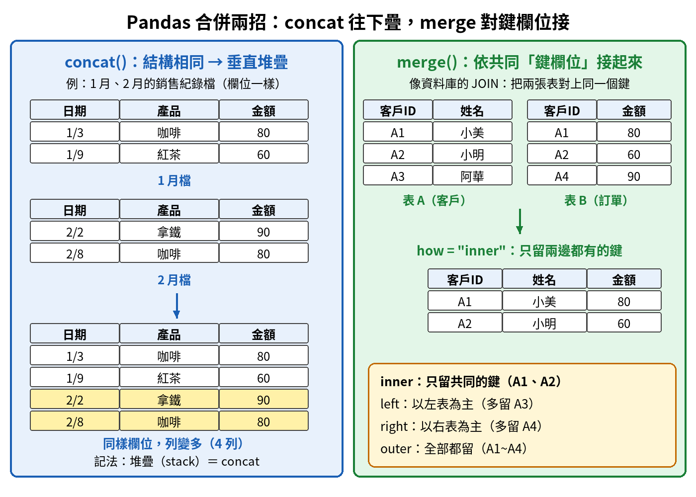
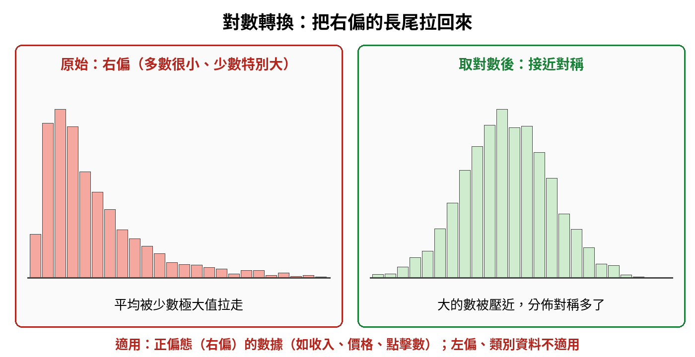
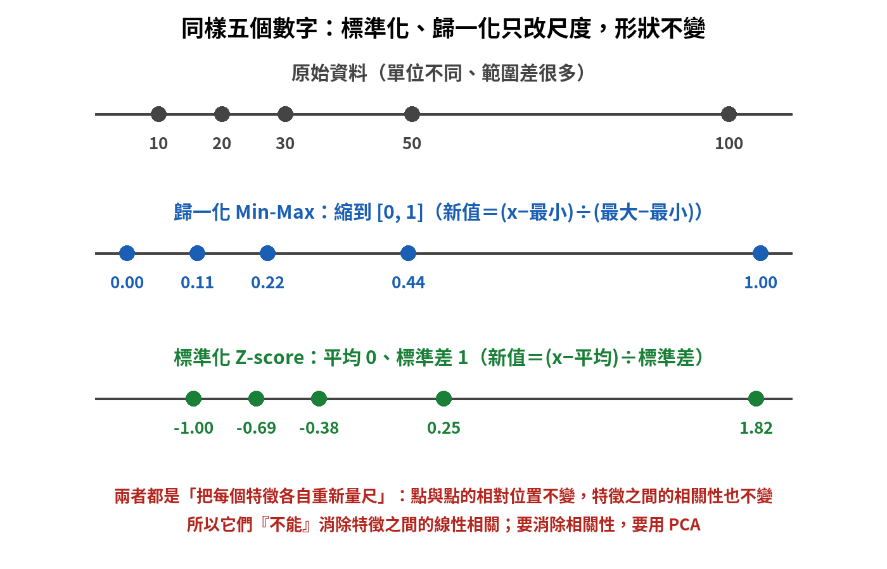
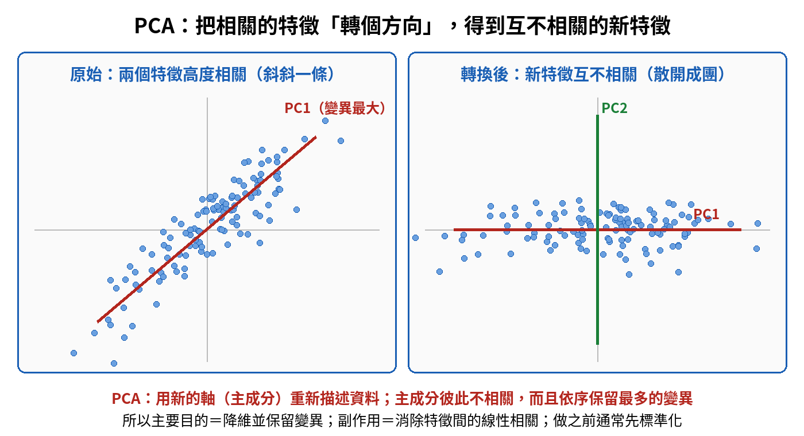
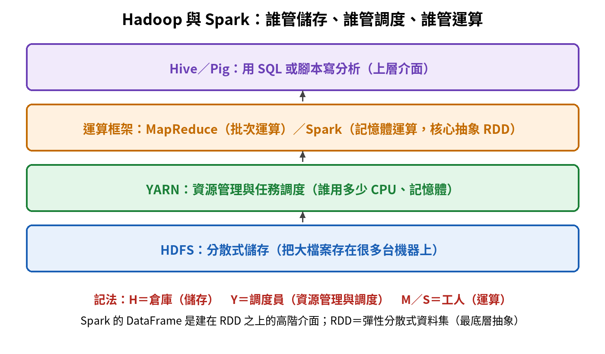

數據處理技術與工具｜觀念圖解複習
五個最容易混淆的觀念，每個都照「為什麼需要它 → 一步步搭起來 → 對照表 → 易錯提醒」整理。這一章多半是「名詞對功能」的配對，先看圖，把每一組配起來就記得住。
單元 ①Pandas 與 SQL 常用操作：合併與分組
為什麼需要這個概念？ 真實資料很少只有一張表：每個月一個檔、客戶資料和訂單資料分開放。分析之前，第一件事就是「把表接起來」或「分組算統計」。Pandas 和 SQL 各有一套工具，名字很像，用途卻不同，最常被拿來混。
一步步搭起來
- 先問：兩張表的欄位一樣嗎？一樣（例如 1 月檔、2 月檔都是「日期、產品、金額」），就是把列往下疊，用 concat()。
- 欄位不一樣，但有共同的鍵欄位（例如都有「客戶ID」），就是依鍵對接，用 merge()，等於資料庫的 JOIN。
- merge 還要決定「留哪些鍵」：參數 how 有 inner、left、right、outer 四種。
- 接好之後要分組算統計：Pandas 用 groupby() 加聚合方法；SQL 用 GROUP BY 加聚合函數（SUM、AVG、COUNT、MAX、MIN）。

| 想做什麼 | Pandas | SQL 對應 | 一句話 |
|---|---|---|---|
| 兩張表依同一個鍵接起來 | merge() | JOIN | 依鍵欄位橫向對接，how 決定留哪些鍵 |
| 結構相同的檔案接成一個大檔 | concat() | UNION ALL | 往下堆疊（也可以設定成橫向） |
| 依索引橫向合併 | join() | JOIN | 預設用索引對接，不是拿來堆疊的 |
| 分組後算每組統計 | groupby()＋聚合方法 | GROUP BY＋聚合函數 | SUM、AVG、COUNT、MAX、MIN |
| 選欄位、指定來源表、篩條件 | df[...]、query() | SELECT、FROM、WHERE | SELECT 選欄位，WHERE 篩列 |
| 排序 | sort_values() | ORDER BY | 排序不是 GROUP BY 的工作 |
| 刪除有缺失值的列或欄 | dropna() | WHERE … IS NOT NULL | 把空值那幾筆拿掉 |
| 刪除完全重複的列 | drop_duplicates() | DISTINCT | 只留一份 |
| 看前幾列／最後幾列 | head(5)／tail(5) | LIMIT | head 看開頭，tail 看結尾 |
單元 ②數據轉換：離散化、對數轉換、縮放與 PCA
為什麼需要這個概念？ 原始資料常常不能直接餵給模型：有的欄位是連續數字但我們想要分組，有的分佈歪得很嚴重，有的欄位數字大小差好幾百倍，有的欄位彼此幾乎在講同一件事。每一種問題有自己的轉換方法，名字聽起來都像「整理數字」，但解決的問題完全不同。
一步步搭起來
- 想把連續數字變成幾個類別 → 離散化（分箱）。
- 分佈往右拖一條長尾巴 → 對數轉換。
- 各欄位的數字範圍差很多 → 標準化或歸一化（只改尺度）。
- 欄位彼此高度相關、想減少欄位數 → PCA（主成分分析）。
離散化／分箱：連續數字切成區間
| 年齡（連續數字） | 18 | 25 | 38 | 52 | 70 |
|---|---|---|---|---|---|
| 分箱後（類別） | 青年 | 青年 | 中年 | 中年 | 老年 |
把連續的數值切成有限個區間或類別，叫離散化（Discretization），也叫分箱（Binning）。切完之後資料變成「類別」，不再是連續數字。區間怎麼切由分析目的決定，可以等寬，也可以依人數等分。
對數轉換：專門對付右偏

- 右偏（正偏態）：多數數值很小，少數特別大，收入、價格、點擊數都很常見。平均數會被少數極大值拉走。
- 取對數之後：大的數被壓得比較近，長尾縮短，分佈變得比較對稱，有利後續分析與建模。
- 不適用：本來就對稱的資料不需要；左偏的長尾在另一邊，取對數反而更歪；類別資料不是數字，不能取對數。
- 小提醒：對數只能用在大於 0 的數；資料裡有 0 時，實務上常改用 log(x＋1)。
標準化、歸一化與 PCA：誰能消除特徵相關？

標準化和歸一化都是「把每個欄位各自換一把尺」。換尺不會改變點與點的相對位置，所以欄位和欄位之間的相關性也不會改變。真正能把相關性拿掉的是 PCA：它把座標軸轉到資料散開最多的方向，得到一組彼此不相關的新特徵（主成分）。

| 方法 | 做什麼 | 會改變特徵間的相關性嗎？ | 主要用途 |
|---|---|---|---|
| 標準化 Z-score | 變成平均 0、標準差 1 | 不會（只改尺度） | 各欄位尺度差很大時，讓大家站在同一起跑線 |
| 歸一化 Min-Max | 縮到 [0, 1] | 不會（只改尺度） | 對數值範圍有嚴格要求時，例如圖像像素 |
| 對數轉換 | 取對數 | 不是用來消除相關的 | 處理右偏 |
| PCA | 旋轉到新的軸（主成分） | 會：主成分彼此線性無關 | 降維、保留最多變異、去除欄位間的重複資訊 |
- PCA 的主要目的是降維，並盡量保留原始資料的變異。主成分彼此不相關，是它附帶的特性。
- 做 PCA 之前通常先標準化，避免數字範圍特別大的欄位主導整個結果。
單元 ③重複數據怎麼判定
為什麼需要這個概念？ 同一筆訂單被系統記了兩次，營收就會被算多。所以清理資料時要先找出重複。問題是：怎樣才叫「重複」？答案看的是資料的內容，不是它進來的時間，也不是它存在電腦哪裡。
一步步搭起來
- 先決定比對範圍：比對全部欄位，或只比對你指定的鍵欄位（Key Columns）。
- 範圍內的值全部相同，才算重複。
- 找到重複後，再決定留哪一筆：留最早的、最新的，或最可靠的那筆，依情境而定。
| 客戶ID | 姓名 | 金額 | 時間戳記 | 以「客戶ID＋姓名＋金額」為鍵，是重複嗎？ |
|---|---|---|---|---|
| A1 | 小美 | 80 | 10:00 | 第一筆，作為比較基準 |
| A1 | 小美 | 80 | 10:05 | 重複：鍵欄位完全相同，只是時間不同 |
| A1 | 小美 | 90 | 10:00 | 不是重複：金額不同，時間一樣也沒用 |
單元 ④Hadoop 與 Spark 分工：誰存、誰調度、誰運算
為什麼需要這個概念？ 資料大到一台電腦放不下、算不完，就要很多台機器一起合作。合作需要分工：有人負責把資料存好，有人負責分配每台機器的資源、把工作排進去，有人負責真正動手算。考試最愛問「這件事是哪個元件負責的」。
一步步搭起來（由下往上）
- 最底層 HDFS：把大檔案切成很多塊，分散存在很多台機器上。
- 往上一層 YARN：資源管理與任務調度，決定誰用多少 CPU 和記憶體、工作排到哪台機器執行。
- 再往上是運算框架：MapReduce 把運算拆成 Map 與 Reduce 兩步，以批次方式處理；Spark 盡量在記憶體裡運算，速度快很多。
- 最上層是好用的介面：Hive 讓人用 SQL 查詢大數據，底下再交給運算引擎執行。

| 元件 | 負責什麼 | 一句話 |
|---|---|---|
| HDFS | 分散式儲存 | 倉庫：把大檔案切塊存在很多台機器上 |
| YARN | 資源管理與任務調度 | 調度員：分配 CPU、記憶體，安排工作在哪裡跑 |
| MapReduce | 批次運算模型 | 工人：把運算拆成 Map 與 Reduce 兩步 |
| Spark | 快速的分散式運算框架 | 工人：多在記憶體運算；最核心的資料抽象是 RDD |
| Hive | 用 SQL 查詢大數據 | 櫃台：上層介面，底下仍交給 MapReduce 或其他引擎執行 |
RDD 是什麼？ RDD 全名是彈性分散式資料集（Resilient Distributed Dataset），是 Spark 最底層、最核心的資料抽象：一份資料被切成很多片，分散在不同機器上，而且壞掉時可以依照記錄的計算步驟重算回來。Spark 的 DataFrame 是建在 RDD 之上、比較好用的高階介面。
單元 ⑤抽樣與它的鄰居們
為什麼需要這個概念？ 資料有幾億筆時，每次分析都跑全部太慢也太貴。如果能挑出一小部分、又能代表整體，就能用很低的成本得到差不多的結論。這就是抽樣。它常和聚合、整合、標準化擺在一起比較，因為它們都在「處理資料」，但目的完全不同。
一步步搭起來
- 目的：降低計算成本，但結論仍要能代表整體。
- 做法：從大資料集中選出一部分「代表性子集」，每一筆仍是原本的資料。
- 挑選方式：依資料特性選一種抽樣方法（見下表）。
| 名稱 | 做什麼 | 跟抽樣的差別 |
|---|---|---|
| 數據抽樣 | 從大資料集中選出代表性子集 | 目的：降低計算成本，選出來的仍是原始資料 |
| 數據聚合 | 把很多筆算成一個摘要（總和、平均） | 筆數也變少，但不是「挑一部分」，而是「算出一個數」 |
| 數據整合 | 把不同來源的資料合併 | 是增加資訊，不是減少資料量 |
| 數據標準化 | 把數值重新量尺 | 資料筆數完全不變 |
| 抽樣方式 | 怎麼抽 | 適合情境 |
|---|---|---|
| 簡單隨機抽樣 | 每個個體被抽中的機率相等 | 母體很均勻時 |
| 分層抽樣 | 先分成子群體，再依比例在每層裡抽 | 想讓樣本反映各子群體的比例 |
| 系統抽樣 | 固定間隔抽一個，例如每 100 筆抽 1 筆 | 資料已排成清單、操作要簡單 |
| 整群抽樣 | 以群組為單位，抽中的群組全部納入 | 資料天然分成很多群，例如分店、班級 |
總整理本章要記的十二句話
- concat 往下疊（結構相同）；merge 依鍵欄位接（像 JOIN）；join 預設用索引。
- merge 的 how：inner 只留共同鍵、left／right 以一邊為主、outer 全部都留。
- GROUP BY 一定搭配聚合函數（SUM、AVG、COUNT、MAX、MIN）。
- SELECT 選欄位、FROM 指定表、WHERE 篩條件、ORDER BY 排序。
- 連續數字切成區間或類別＝離散化／分箱。
- 對數轉換用在右偏（正偏態）；類別資料不能取對數。
- 標準化、歸一化只改尺度，不改相關性；歸一化縮到 [0, 1]，標準化變成平均 0、標準差 1。
- PCA：降維、保留變異、主成分彼此不相關；做之前通常先標準化。
- 重複＝全部欄位或鍵欄位的值完全相同，不是看時間戳記。
- HDFS 儲存、YARN 資源管理與調度、MapReduce／Spark 運算、Hive 用 SQL 查詢。
- Spark 核心抽象＝RDD；DataFrame 是建在它上面的高階介面。
- 抽樣＝選代表性子集來降低成本；聚合是算摘要、整合是合併來源。